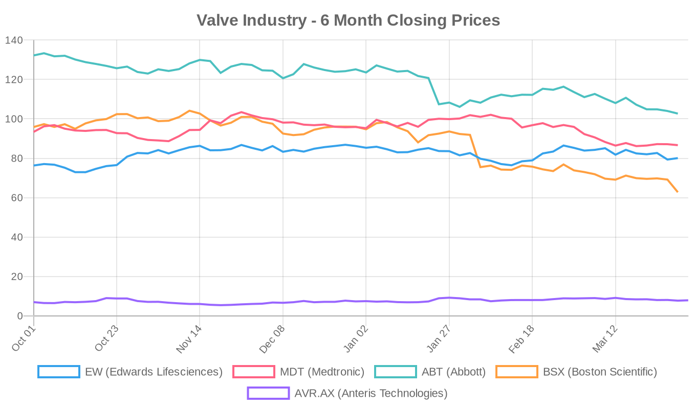
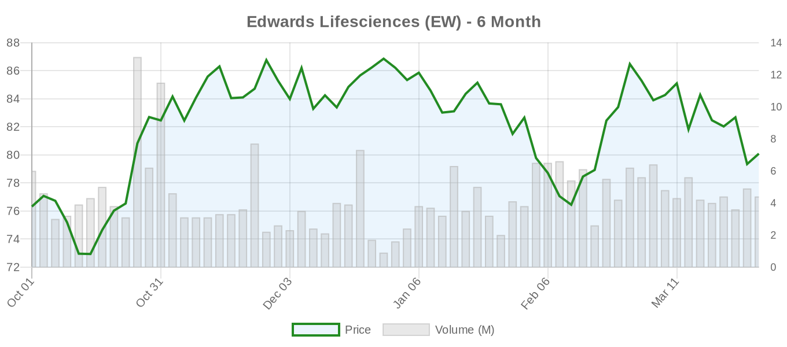
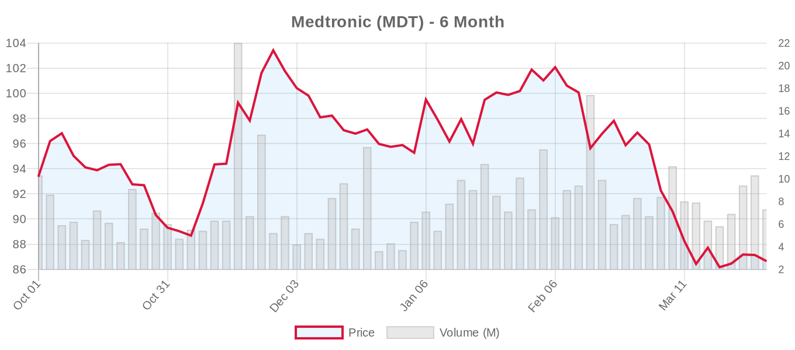
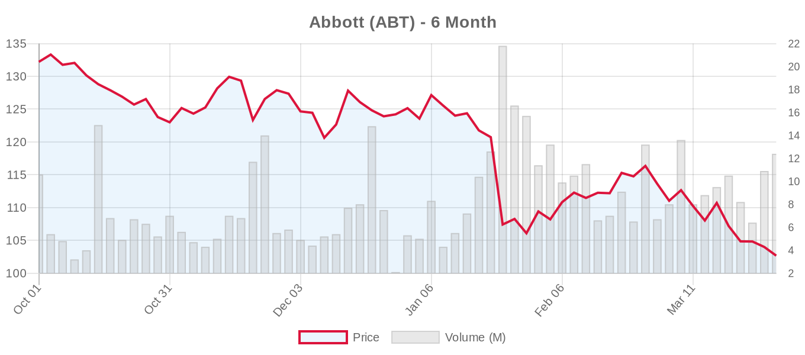
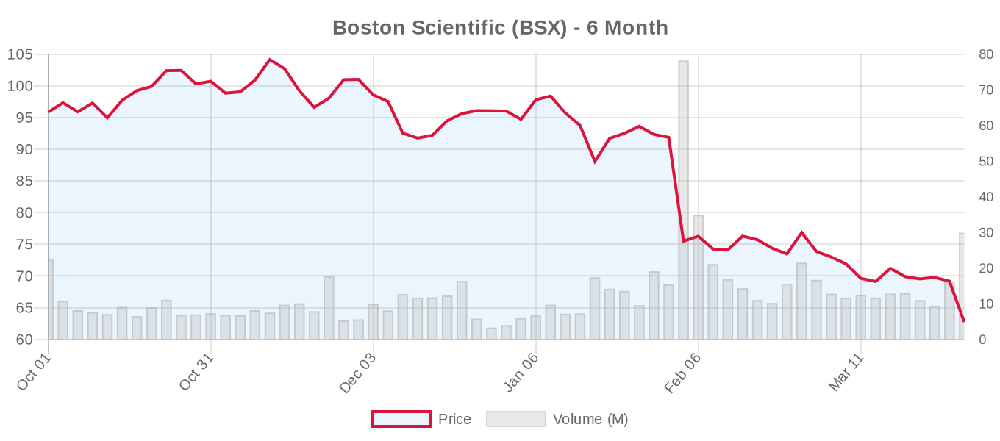
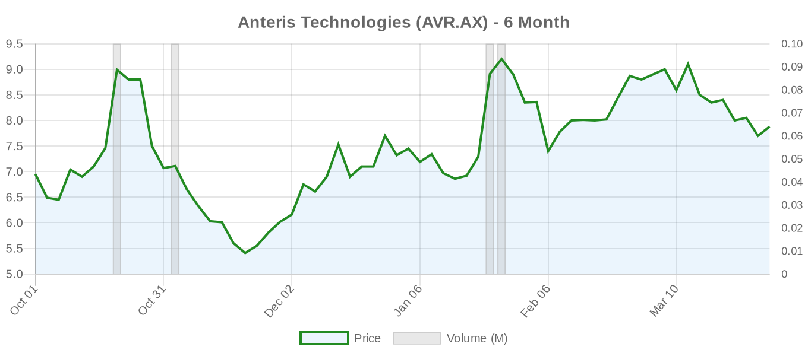

|
||||||||
|
April 01, 2026 By E. Nolan Beckett |
||||||||
|
||||||||
Executive SummaryToday's valve research highlights practical improvements in mitral interventions, with new transseptal access techniques reducing procedure times by 40 minutes and innovative bailout strategies for rare complications. However, cerebral protection devices during TAVR failed to demonstrate meaningful stroke reduction in a comprehensive meta-analysis, while studies show stable outcomes when deferring mitral interventions after successful aortic valve replacement. As ACC Scientific Sessions continues, we're seeing a mix of incremental procedural advances and sobering reminders about the limits of our current technologies. The day's findings underscore the importance of technique refinement and realistic expectations as transcatheter therapies mature. Meanwhile, Edwards Lifesciences reported sustained benefits from their EVOQUE tricuspid system, though stock performance remains mixed across the sector. Today's Key FindingsThe most compelling finding comes from a single-center comparison of transseptal puncture techniques for MitraClip procedures, demonstrating that the VersaCross Large Access system significantly reduces both puncture time (15.8 vs 26.6 minutes) and overall procedure duration (96 vs 138 minutes) compared to traditional needle approaches. This represents a meaningful efficiency gain that could improve laboratory throughput and potentially reduce complications. In contrast, a systematic review and Bayesian meta-analysis of cerebral embolic protection devices during TAVR found no significant reduction in stroke or mortality across 11,632 patients from eight randomized trials. The probability of clinically meaningful benefit was low even with optimistic assumptions, raising questions about the routine use of these costly devices. Aortic Valve (TAVR/TAVI)[NOTABLE] A comprehensive meta-analysis of cerebral embolic protection devices in TAVR found no significant reduction in stroke (RR 0.92, 95% CI 0.74-1.15) or mortality across 11,632 patients from eight RCTs. The Bayesian analysis revealed only a 35.6% probability that these devices reduce stroke by more than 10%, suggesting limited clinical utility despite their widespread adoption. This challenges current practice patterns and raises cost-effectiveness concerns. A case report from Japan illustrates a critical procedural pitfall in valve-in-valve TAVR for failed Trifecta bioprostheses, where the guidewire passed between degenerated leaflets rather than through the central orifice despite reassuring fluoroscopy. The case emphasizes the importance of active TEE confirmation of wire position, particularly in early-degenerating bioprostheses known for structural deterioration. A preprint study analyzing 339 patients suggests that 3D left ventricular geometry from pre-TAVR CT scans can better predict post-procedural reverse remodeling than conventional echocardiographic metrics, with particularly strong performance in women (R² 0.80 vs 0.16 for clinical variables alone). This computational approach could improve patient selection and risk stratification. Mitral Valve (MitraClip, PASCAL, TMVR)[NOTABLE] A retrospective analysis of 192 consecutive MitraClip procedures demonstrated that the VersaCross Large Access transseptal system reduced total procedure time by 42 minutes compared to traditional mechanical needles (96 vs 138 minutes, all p<0.001). The system also provided more consistent puncture times and faster steerable guide catheter delivery, suggesting meaningful improvements in laboratory efficiency and potentially safety. An innovative case report describes "inverse leaflet grasping" as a bailout technique for challenging mitral anatomy, where the PASCAL Ace device clasps were fixed horizontally while paddles remained elongated during posterior leaflet engagement. This modification enabled successful repair in a patient with severe prolapse where conventional techniques failed, expanding the technical repertoire for complex cases. A novel bailout strategy for leaflet tear after mitral TEER combined a PASCAL Ace device with an Amplatzer Vascular Plug II to seal the defect transcatheters. While creative, such complications underscore the need for careful patient selection and technical precision in mitral interventions. A retrospective study of 147 patients with mitral annular calcification undergoing aortic valve replacement found no significant progression of mitral stenosis or regurgitation over 6 years of follow-up, supporting a conservative approach to concomitant mitral disease in this population. Tricuspid Valve (TriClip, TTVR)Edwards Lifesciences reported sustained benefits from their EVOQUE tricuspid replacement system at 2-year follow-up, though specific clinical outcomes were not detailed in the available information. A JACC Journals article analyzed right heart strain changes after transcatheter tricuspid valve replacement using cardiac CT, providing imaging insights into procedural effects. International expansion continues with the first TriClip procedure successfully performed in Africa at CHU d'Oran, marking geographic growth for transcatheter tricuspid therapies. Preprint HighlightsA medRxiv preprint analyzing 339 TAVR patients suggests that statistical shape analysis of pre-procedural CT scans can significantly improve prediction of 1-year left ventricular mass regression, particularly in women. The sex-specific computational models achieved R² values of 0.80 in women and 0.89 in men, substantially outperforming conventional echocardiographic predictors. This approach could enhance patient selection and risk stratification, though validation in larger cohorts is needed. Device & TechnologySoloPace announced FDA 510(k) clearance and US commercial release of the SOLO PACE FUSION Temporary Pacing System, expanding options for temporary cardiac pacing during structural heart procedures. JenaValve Technology began commercialization of the Trilogy® Transcatheter Heart Valve, adding to the competitive landscape in transcatheter aortic valve technologies. Industry & MarketEdwards Lifesciences was upgraded to Outperform at Wolfe Research, reflecting analyst confidence despite recent stock volatility. The company continues reporting positive clinical outcomes from the EVOQUE tricuspid system, supporting their leadership position in tricuspid interventions. TCTMD reported on the SURViV registry showing transcatheter valve-in-valve therapy as a solid option for failed mitral bioprostheses, potentially expanding the addressable market for transcatheter mitral technologies. Financial AnalysisThe valve industry presents a tale of two narratives: strong clinical progress shadowed by market uncertainty. Edwards Lifesciences received analyst upgrades based on sustained EVOQUE system benefits and pipeline strength, yet trades at a premium 44x trailing P/E that reflects both growth expectations and execution risk. Medtronic's 6-month decline of 7.2% contrasts with its diversified portfolio stability, while Abbott's 22% drop appears overdone given its broad device leadership. Boston Scientific's dramatic 35% decline despite strong transcatheter momentum suggests broader market concerns about competitive positioning. The sector's mixed performance reflects investor caution about transcatheter adoption rates, reimbursement pressures, and the pace of surgical displacement. However, continued clinical validation and geographic expansion support long-term growth trajectories, particularly in tricuspid and mitral markets where unmet need remains substantial. Valve Industry Stocks Edwards Lifesciences (EW)
Medtronic (MDT)
Abbott (ABT)
Boston Scientific (BSX)
Anteris Technologies (AVR.AX)
The structural heart sector remains bifurcated between clinical progress and market skepticism. While established players face valuation compression amid competitive concerns, sustained innovation in tricuspid and mitral markets supports long-term growth narratives for well-positioned companies. Clinical Trial UpdatesAortic Valve Trials
Mitral Repair Trials
Mitral Replacement Trials
Tricuspid Repair Trials
Tricuspid Replacement Trials
Notable trial updates include continued recruitment for major mitral repair studies (PASCAL Pivotal, PRIMATY) and new SAPIEN 3 Ultra RESILIA registries focusing on long-term valve performance. The completion of several smaller feasibility studies signals progression toward larger pivotal trials in the tricuspid space. Today's findings reflect the structural heart field's ongoing maturation — procedural refinements are yielding meaningful efficiency gains while some hyped technologies fail to deliver on their initial promise. As ACC continues, expect more nuanced discussions about appropriate patient selection and realistic outcome expectations in our rapidly evolving specialty. |
||||||||
|
|
||||||||
|
||||||||
|